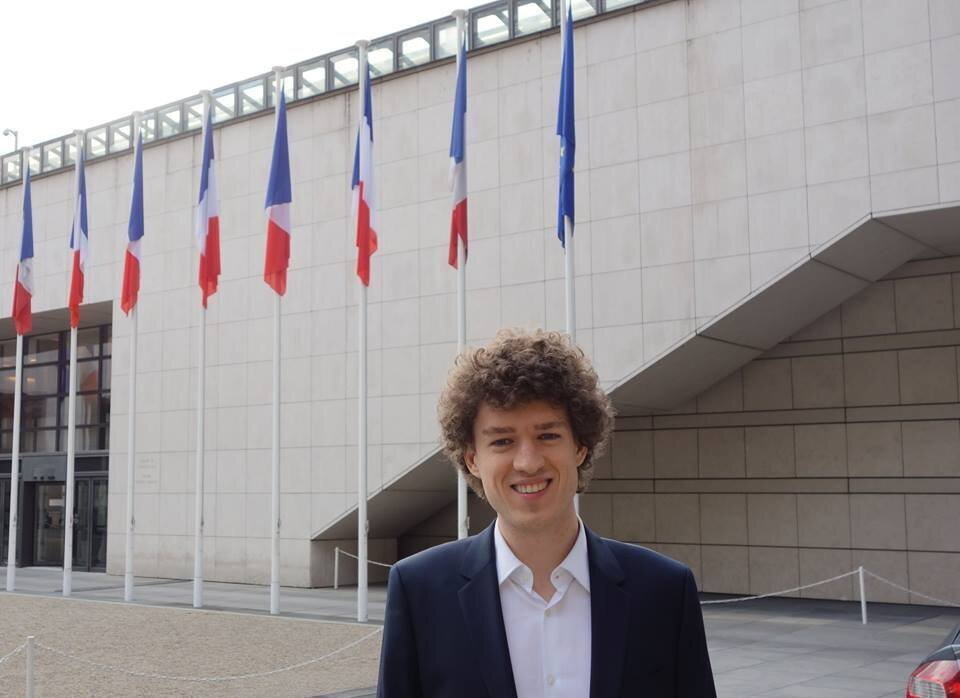

Antoine Toisoul

Hello and welcome to my personal website! I am Antoine, an AI Research Scientist in 3D Generative AI and Computer Vision. I have published papers at conferences and journals that include Nature Machine Intelligence, CVPR, SIGGRAPH, SIGGRAPH Asia and TPAMI. Please visit my publication page if you would like to know more.
Before joining Meta AI, I worked at Samsung AI Center in Cambridge, UK and did a PhD in measurement-based computer graphics at Imperial College London in the Realistic Graphics and Imaging group under the supervision of Prof. Abhijeet Ghosh.
Contact: dr.antoine.toisoul AT gmail.com
News
- June 2026: We will present our papers MeshFlow (highlight) and WorldGen at CVPR 2026!
- November 2025: Our technical report on WorldGen has been released!
- September 2025: Our work on 3D Generative AI has been presented at Meta Connect!
- May 2025: Our work on AssetGen 2.0 has been announced by Meta!
- March 2025: Our paper UnCommon Objects in 3D (uCO3D dataset) has been accepted at CVPR 2025!
- July 2024: Meta 3D Gen has been published on the Meta AI website!
- March 2024: Our paper Move Anything with Layered Scene Diffusion has been accepted at CVPR 2024!
Publications